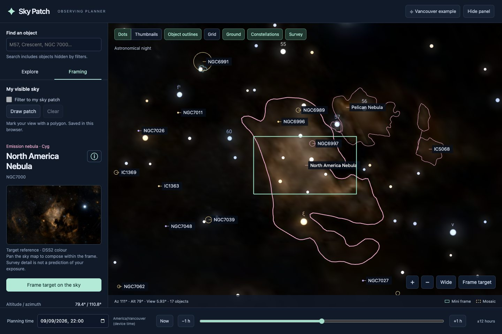

Free & open source · No account · Desktop and mobile

A real preview of your field of view. Before the first exposure.
12,000+deep-sky objects to explore
Your field of viewsingle frames and mosaics
Ready for the fieldoptional offline imagery
FROM “WHAT’S UP?” TO “THAT’S THE ONE.”
Plan with the sky in front of you.
Built for visual discovery, especially when your telescope can only see a small part of the sky.
01 / FIND YOUR NEXT TARGET
A whole sky of possibilities.
Pan around a 360° planetarium for your location and planning time. Discover nebulae, galaxies and clusters as labelled dots, outlines or photographic thumbnails.
See a true angular field of view over the survey. Pan the object within your frame and compare Alt-Az and EQ orientation. Start with the editable DWARF Mini preset.
Draw a polygon around your accessible sky. It stays fixed to the local horizon while objects move through it. Switch the patch filter on or off whenever you need.
Compare physical disc sizes with your telescope frame at your chosen time and location. These are scale footprints, not simulated surface photographs. Always fit the correct solar filter before pointing at the Sun.
The core saves automatically: about 9.4 MB for the planetarium, bundled bright stars, catalogue and framing tools. In Install / Offline, wait for “Core ready offline”.
2
Choose your imagery
Keep the core alone, or add the all-sky survey overview. Our test download was 42.8 MB, with an 80 MB cap. Cancel, resume or remove it anytime.
3
Install—or bookmark
Use the install button where supported. On iPhone/iPad, use Safari → Share → Add to Home Screen. Chrome/Edge on desktop and Android offer app installation; recent Mac Safari offers File → Add to Dock.
Installation is optional: offline saving also works in a supported browser. Fine survey detail, object preview photos, Wikipedia and external links still need internet. Browser storage can be cleared; check readiness and try an offline reload before your trip.
A FEW THINGS YOU MIGHT WONDER
Before you head outside.
Is Sky Patch free?
Yes. The app is free to use, with no account, subscription or advertising. The code is public under AGPL-3.0, with separate credits and licences for its data and dependencies.
Do I need a DWARF Mini?
No. The framing preset starts with a DWARF Mini, but you can edit the field width and height for another telescope or camera. The preset is 2.14° × 1.20° at 1920 × 1080; check your own equipment’s actual field of view.
Will my photographs look like the survey?
The preview shows angular scale and framing, not a prediction of image quality. Your telescope, exposure time, processing, seeing and sky brightness determine the detail you capture. The offline survey overview is intentionally lower resolution.
Can my laptop use it offline too?
Yes. Open the planner online and let the core finish saving. You can then use the catalogue, star map, planning time, filters and framing offline on desktop or mobile. Installing it provides an app icon and separate window where supported, but is not required for offline caching.
Does it control my telescope?
No. Sky Patch helps you choose and frame a target. Use your telescope’s own software to slew and take photographs. The app does not connect to or control your equipment.
How does the visible-sky patch work?
Click or tap corners around your accessible view. The polygon stays fixed in local altitude and azimuth. Filtering checks object centres, not whether the whole object or camera frame fits inside. One patch is saved per browser; redraw it if you change observing sites.
Where are my settings saved?
Location, equipment, filters and your sky patch are stored locally in your browser. They don’t sync between devices. Online imagery and reference requests go to the respective providers. There are no app accounts or analytics.